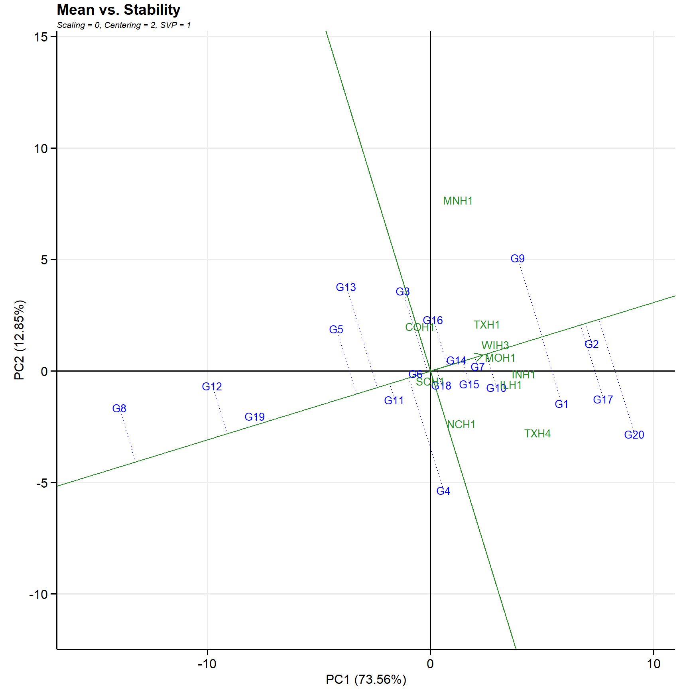
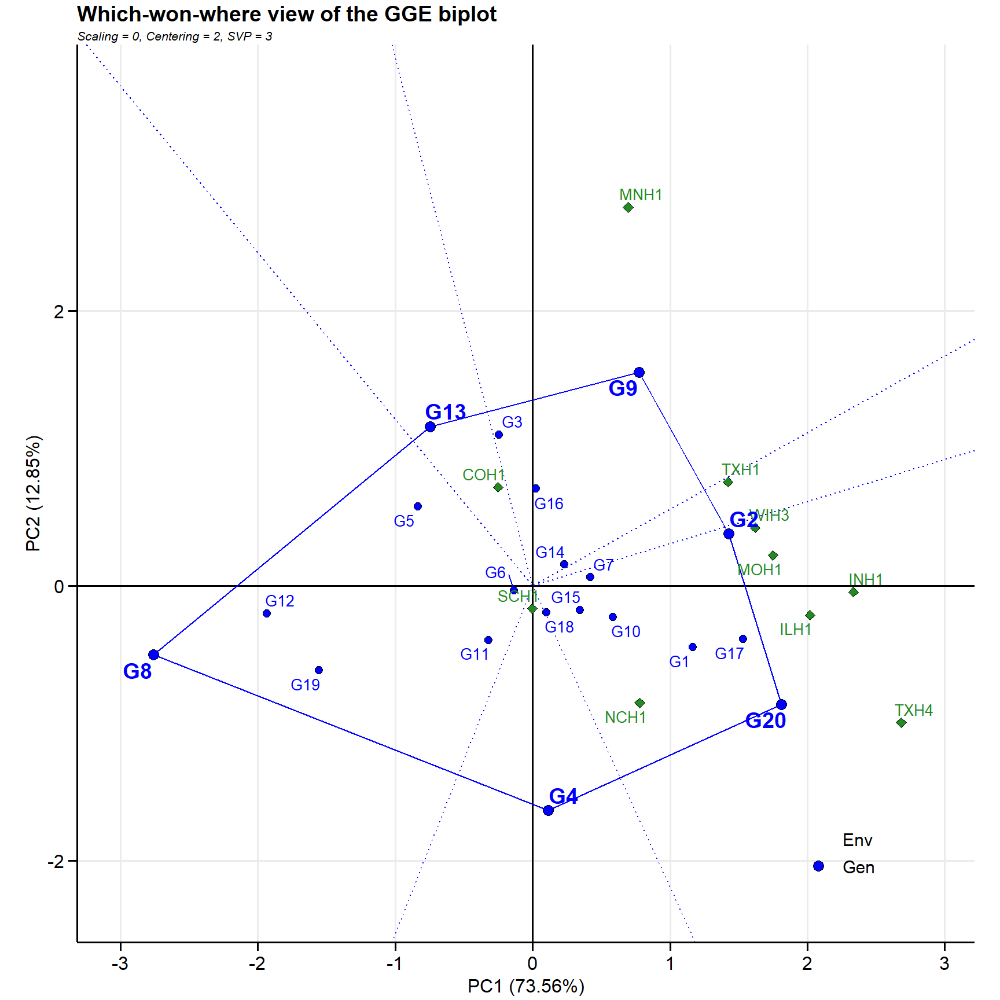
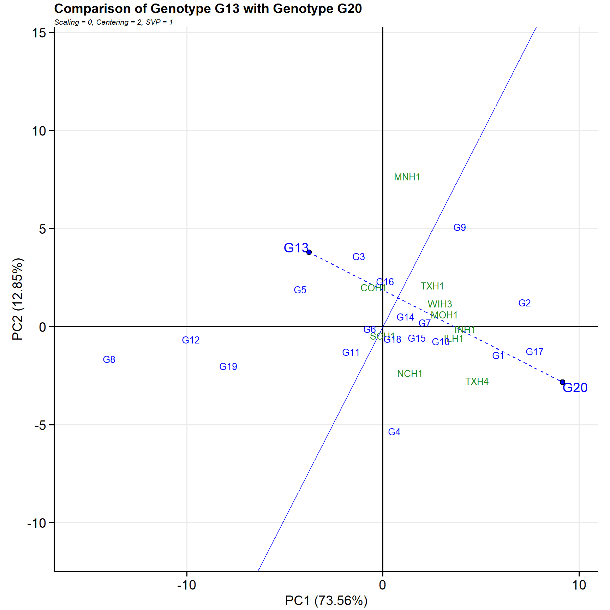
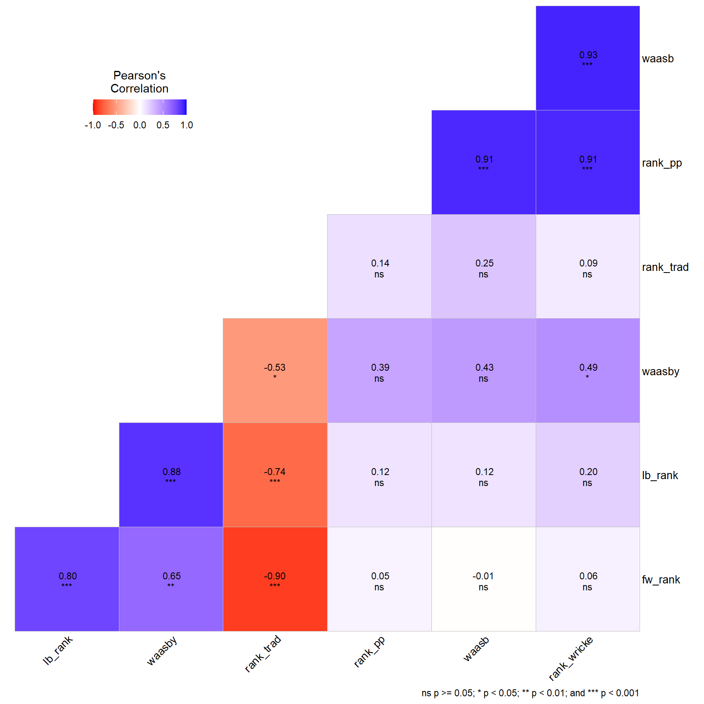

Code
library(metan)
library(tidyverse)
library(rio)
library(patchwork)
library(gt)
# Importing data
df <-
import("data/ge_data.csv") |>
metan::as_factor(env, gen, replicate) |>
mutate(gy_ton = grain_yield * 0.0691895)The Additive Main Effects and Multiplicative Interaction (AMMI) model is a powerful statistical framework used in multi-environment trials (MET) to analyze Genotype-by-Environment (GxE) interactions. While standard Analysis of Variance (ANOVA) isolates main effects but fails to explore the structure of the interaction, and regular Principal Component Analysis (PCA) fails to separate main additive effects from the interaction, AMMI combines both into a single unified approach.
The method operates in two sequential phases:
Additive Phase: An ordinary linear model (ANOVA) is fitted to the phenotypic matrix to extract the grand mean, genotype main effects, and environment main effects.
Multiplicative Phase: The residual matrix remaining from the additive model—which represents the GxE interaction—is structured using Singular Value Decomposition (SVD). This decomposes the interaction into a series of orthogonal Interaction Principal Component Axes (IPCA).
By separating the pattern of the interaction from the random background noise, AMMI allows breeders to identify broadly adapted genotypes, characterize specifically adapted cultivars to macro-environments, and group environments into homogeneous mega-environments.
The phenotypic performance of genotype \(i\) in environment \(j\) averaged over blocks or replications is mathematically expressed as:
\[Y_{ij} = \mu + g_i + e_j + \sum_{k=1}^{K} \left( \lambda_k \alpha_{ik} \gamma_{jk} \right) + \rho_{ij}\]
Where: * \(Y_{ij}\) is the mean yield (or response) of genotype \(i\) in environment \(j\).
* \(\mu\) is the grand mean of the trial. * \(g_i\) is the main additive effect of the \(i\)-th genotype. * \(e_j\) is the main additive effect of the \(j\)-th environment.
* \(\lambda_k\) is the singular value of the \(k\)-th Interaction Principal Component Axis (IPCA), which quantifies the portion of the interaction variance explained by that axis.
* \(\alpha_{ik}\) is the genotypic eigenvector score for the \(k\)-th IPCA axis.
* \(\gamma_{jk}\) is the environmental eigenvector score for the \(k\)-th IPCA axis.
* \(K\) is the total number of retained IPCA axes (\(K \le \min(G-1, E-1)\)). * \(\rho_{ij}\) is the residual error containing the unexplained GxE interaction deviation.
Before running the decomposition, the additive main effects are subtracted from the raw cell means to generate the clean interaction matrix \(\mathbf{I}\) of dimension \((G \times E)\):
\[I_{ij} = Y_{ij} - \mu - g_i - e_j\] The Singular Value Decomposition partitions the matrix \(\mathbf{I}\) into three distinct mathematical matrices:
\[\mathbf{I} = \mathbf{U} \mathbf{\Sigma} \mathbf{V}^T\]
Where: * \(\mathbf{U}\) is a \((G \times K)\) matrix containing the left singular vectors (genotype eigenvectors). * \(\mathbf{\Sigma}\) is a \((K \times K)\) diagonal matrix containing the singular values (\(\lambda_k\)) sorted in descending order (\(\lambda_1 \ge \lambda_2 \ge \dots \ge \lambda_K\)). The eigenvalue associated with axis \(k\) is equal to \(\lambda_k^2\), which represents the Sum of Squares explained by that axis. * \(\mathbf{V}\) is an \((E \times K)\) matrix containing the right singular vectors (environment eigenvectors).
To project genotypes and environments onto biplots, the singular values (\(\mathbf{\Sigma}\)) must be allocated to the singular vectors to generate the final coordinates.
\[G_{ik} = \lambda_k^{0.5} \alpha_{ik}\]
\[E_{jk} = \lambda_k^{0.5} \gamma_{jk}\]
This symmetric scaling ensures that the dot product of the genotype coordinates and environment coordinates exactly reconstructs the explained interaction matrix element: \(I_{ij} \approx \sum_{k=1}^{K} (G_{ik} \times E_{jk})\). On an AMMI1 biplot, genotypes or environments with scores stretching far from the origin (\(0.0\)) have high interaction capacity (high sensitivity), while points clustered close to the center are highly stable and approach zero interaction.
Warning: Row(s) 362, 370, 373, 401, 412, 413, 419, 428, 429, 460, 475, 566, 592, and 600
with NA values deleted.Warning in has_text_in_num(data): Non-numeric variable(s) ENV, GEN, REP, Y will not be selected.
Use 'find_text_in_num()' to see rows with non-numeric characteres.Warning: There was 1 warning in `summarise()`.
ℹ In argument: `across(where(is.numeric), fun, na.rm = TRUE)`.
ℹ In group 1: `GEN = G1`, `ENV = COH1`.
Caused by warning:
! The `...` argument of `across()` is deprecated as of dplyr 1.1.0.
Supply arguments directly to `.fns` through an anonymous function instead.
# Previously
across(a:b, mean, na.rm = TRUE)
# Now
across(a:b, \(x) mean(x, na.rm = TRUE))
ℹ The deprecated feature was likely used in the metan package.
Please report the issue at <https://github.com/nepem-ufsc/metan/issues>.── Variable gy_ton ─────────────────────────────────────────────────────────────── AMMI analysis table ── Source Df Sum Sq Mean Sq F value Pr(>F) Proportion Accumulated
ENV 9 6958.4 773.15 10.93 2.69e-05 NA NA
REP(ENV) 16 1131.7 70.73 15.95 2.43e-33 NA NA
GEN 19 1138.0 59.89 13.51 4.93e-32 NA NA
GEN:ENV 171 1141.5 6.68 1.51 6.62e-04 NA NA
PC1 27 1007.2 37.30 8.41 0.00e+00 57.1 57.1
PC2 25 376.7 15.07 3.40 0.00e+00 21.4 78.5
PC3 23 129.2 5.62 1.27 1.84e-01 7.3 85.9
PC4 21 93.4 4.45 1.00 4.62e-01 5.3 91.2
PC5 19 52.2 2.75 0.62 8.91e-01 3.0 94.1
PC6 17 37.6 2.21 0.50 9.53e-01 2.1 96.2
PC7 15 31.2 2.08 0.47 9.55e-01 1.8 98.0
PC8 13 19.1 1.47 0.33 9.87e-01 1.1 99.1
PC9 11 15.8 1.44 0.32 9.81e-01 0.9 100.0
Residuals 370 1640.8 4.43 NA NA NA NA
Total 756 13772.7 18.22 NA NA NA NA✔ All variables with significant (p < 0.05) genotype-vs-environment interaction✔ Done!| Source | Df | Sum Sq | Mean Sq | F value | Pr(>F) | Proportion | Accumulated |
|---|---|---|---|---|---|---|---|
| ENV | 9 | 6958.35996 | 773.151106 | 10.930752 | 2.691320e-05 | NA | NA |
| REP(ENV) | 16 | 1131.70787 | 70.731742 | 15.950162 | 2.433976e-33 | NA | NA |
| GEN | 19 | 1137.99001 | 59.894211 | 13.506275 | 4.932050e-32 | NA | NA |
| GEN:ENV | 171 | 1141.48405 | 6.675345 | 1.505305 | 6.623992e-04 | NA | NA |
| PC1 | 27 | 1007.20866 | 37.304020 | 8.410000 | 0.000000e+00 | 57.1 | 57.1 |
| PC2 | 25 | 376.72081 | 15.068830 | 3.400000 | 0.000000e+00 | 21.4 | 78.5 |
| PC3 | 23 | 129.16591 | 5.615910 | 1.270000 | 1.836000e-01 | 7.3 | 85.9 |
| PC4 | 21 | 93.37709 | 4.446530 | 1.000000 | 4.623000e-01 | 5.3 | 91.2 |
| PC5 | 19 | 52.18858 | 2.746770 | 0.620000 | 8.915000e-01 | 3.0 | 94.1 |
| PC6 | 17 | 37.61252 | 2.212500 | 0.500000 | 9.527000e-01 | 2.1 | 96.2 |
| PC7 | 15 | 31.20053 | 2.080040 | 0.470000 | 9.546000e-01 | 1.8 | 98.0 |
| PC8 | 13 | 19.10222 | 1.469400 | 0.330000 | 9.872000e-01 | 1.1 | 99.1 |
| PC9 | 11 | 15.82128 | 1.438300 | 0.320000 | 9.814000e-01 | 0.9 | 100.0 |
| Residuals | 370 | 1640.78233 | 4.434547 | NA | NA | NA | NA |
| Total | 756 | 13772.72182 | 18.217886 | NA | NA | NA | NA |
The AMMI1 biplot (type = 1) maps the additive main effects on the horizontal axis directly against the primary multiplicative interaction axis on the vertical axis. To interpret this space, imagine a vertical reference line drawn at the trial’s grand mean (\(\mu\)) on the X-axis, intersected by a horizontal reference line at zero (\(0.0\)) on the Y-axis.
The AMMI2 biplot (type = 2) strips away the additive main means completely, projecting the interaction residuals across the first two multiplicative dimensions.
In this space, environments are typically evaluated as vectors stretching from the central origin \((0,0)\), while genotypes are plotted as independent coordinate points.
The Origin Point \((0,0)\): Represents the theoretical zero-interaction baseline. Genotypes sitting near this center point are highly stable. The further a genotype or environment extends away from the origin, the more volatile and interaction-heavy its profile is.
Vector Length (Discriminating Power): Long environmental vectors indicate environments with high discriminating power that force expression differences among the germplasm panel. Short vectors indicate muted, low-discriminating testing sites.
Spatial Angles (Specific Adaptation): The geometric angle formed between a genotype’s point and an environment’s vector dictates their specific performance matching:
Acute Angle (\(< 90^\circ\)): Represents a strong positive interaction. The genotype thrives in that specific environment and will probably yield well above its normal average there.
Right Angle (\(\approx 90^\circ\)): Indicates zero interaction. The genotype’s performance at that location tracks its baseline average, completely independent of GxE matrix adjustments.
Obtuse Angle (\(> 90^\circ\)): Represents a strong negative interaction. The genotype is poorly matched to that environment, and its yield floor will likely crash.
While the AMMI model separates the genotype main effect (\(G\)) from the interaction matrix (\(G \times E\)), the GGE (Genotype + Genotype-by-Environment) biplot approach combines them. From a plant breeder’s practical perspective, an environment’s main effect (\(E\)) accounts for up to 80% of total yield variation in multi-environment trials, but it is completely irrelevant for cultivar selection because it applies equally to all genotypes.
Therefore, GGE structures the data by subtracting only the environmental main effect, analyzing G and GxE simultaneously. The simplified underlying mathematical structure is:
\[Y_{ij} - \mu - e_j = \sum_{k=1}^{2} \lambda_k \alpha_{ik} \gamma_{jk} + \rho_{ij}\]
Where \(Y_{ij} - \mu - e_j\) isolates the combined GGE signal. Through Singular Value Decomposition (SVD), this signal is compressed into two principal components (PC1 and PC2) –in the exactly same way as AMMI does–, which are plotted against each other to evaluate performance and stability natively.
To generate the specialized geometric overlays of a GGE biplot, the raw Multi-Environment Trial (MET) data must undergo two critical, sequential mathematical transformations: Data Centering and Singular Value Partitioning (SVP).
Before executing the decomposition, the data matrix must be mathematically “centered” to remove irrelevant variation. Standard GGE software offers different centering options, but the most common for yield trials is Environment-Centered GGE.
For a phenotypic value \(Y_{ij}\) (Genotype \(i\) in Environment \(j\)), the transformation is:
\[Z_{ij} = Y_{ij} - \mu - e_j = g_i + (ge)_{ij}\]
Where: * \(\mu\) is the grand mean. * \(e_j\) is the environment main effect. * \(g_i\) is the genotype main effect. * \((ge)_{ij}\) is the structural GxE interaction residual.
By subtracting \(\mu + e_j\), we completely remove this massive source of variation. The resulting matrix, \(\mathbf{Z}\), isolates Genotype (\(G\)) + Genotype-by-Environment (\(GE\)) simultaneously. This is the precise selection signal a breeder needs to evaluate.
Once the centered matrix \(\mathbf{Z}\) is formed, Singular Value Decomposition (SVD) decomposes it into left singular vectors (Genotypes, \(\mathbf{U}\)), right singular vectors (Environments, \(\mathbf{V}\)), and a diagonal matrix of singular values (\(\mathbf{\Sigma}\), containing \(\lambda_1\) and \(\lambda_2\) for the first two principal components).
The core linear algebra expression for the first two components is:
\[Z_{ij} = \lambda_1 \alpha_{ik} \gamma_{jk} + \lambda_2 \alpha_{i2} \gamma_{j2}\]
To plot this data on a 2D graph, the singular values (\(\lambda_k\)) must be mathematically shared or “partitioned” between the genotypes and environments using a scaling exponent, \(f\):
\[\text{Genotype Score: } \xi_{ik} = \alpha_{ik} \lambda_k^f \quad \text{and} \quad \text{Environment Score: } \eta_{jk} = \gamma_{jk} \lambda_k^{1-f}\]
Depending on the value chosen for \(f\), the geometric properties of the biplot change completely to answer different breeding objectives.
In this layout, the entire weight of the singular values is allocated to the genotypes (\(f = 1\)), leaving the environment vectors unscaled (\(1-f = 0\)). svp = 1 in gge().
\[\xi_{ik} = \alpha_{ik} \lambda_k \quad \text{and} \quad \eta_{jk} = \gamma_{jk}\]
Here, the singular values are assigned entirely to the environment vectors (\(1-f = 1\)), leaving the genotype points unscaled (\(f = 0\)). svp = 2 in gge().
\[\xi_{ik} = \alpha_{ik} \quad \text{and} \quad \eta_{jk} = \gamma_{jk} \lambda_k\]
Environment Evaluation and Macro-Niche Identification.
Geometric Feature: The lengths of the environment vectors and the angles between them are mathematically precise representations of their standard deviations and linear correlations (\(r = \cos\theta\)).
Breeding Application: This scaling is mandatory for evaluating Discriminativeness vs. Representativeness and map inter-environmental correlations to optimize testing network costs.
This method splits the singular values equally down the middle between genotypes and environments (\(\lambda_k^{0.5}\)). svp = 3 in gge().
\[\xi_{ik} = \alpha_{ik} \lambda_k^{0.5} \quad \text{and} \quad \eta_{jk} = \gamma_{jk} \lambda_k^{0.5}\]
Here, we fit three models so that we can use the proper singular value decomposition strategy for each biplot example.
This view handles the core trade-off between yield volume and risk. It constructs a virtual Average Environment Axis (AEA) represented by a single-arrowed line passing through the biplot origin and an average environmental marker.

Class of the model: "gge"
Variable extracted: projection TRAIT GEN PROJECTION
1 gy_ton G6 0.08718374
2 gy_ton G14 0.13727061
3 gy_ton G19 0.38566559
4 gy_ton G7 0.43218374
5 gy_ton G18 0.75393770
6 gy_ton G11 0.75753821
7 gy_ton G2 0.94740401
8 gy_ton G15 1.06129984
9 gy_ton G10 1.58164304
10 gy_ton G16 2.16591634
11 gy_ton G12 2.24498897
12 gy_ton G8 2.53086556
13 gy_ton G5 3.04729264
14 gy_ton G1 3.13111297
15 gy_ton G17 3.49017738
16 gy_ton G9 3.70385794
17 gy_ton G3 3.79426901
18 gy_ton G13 4.72794077
19 gy_ton G4 5.28188553
20 gy_ton G20 5.38806875This view partitions your entire trial network into distinct geographic mega-environments. The visualization relies on a polygon overlay drawn around the outermost genotypes, creating an enclosed hull. Straight lines (perpendicular bisectors) are then projected outward from the origin through each side of the polygon.

Class of the model: "gge"
Variable extracted: projection TRAIT GEN PROJECTION
1 gy_ton G6 0.08718374
2 gy_ton G14 0.13727061
3 gy_ton G19 0.38566559
4 gy_ton G7 0.43218374
5 gy_ton G18 0.75393770
6 gy_ton G11 0.75753821
7 gy_ton G2 0.94740401
8 gy_ton G15 1.06129984
9 gy_ton G10 1.58164304
10 gy_ton G16 2.16591634
11 gy_ton G12 2.24498897
12 gy_ton G8 2.53086556
13 gy_ton G5 3.04729264
14 gy_ton G1 3.13111297
15 gy_ton G17 3.49017738
16 gy_ton G9 3.70385794
17 gy_ton G3 3.79426901
18 gy_ton G13 4.72794077
19 gy_ton G4 5.28188553
20 gy_ton G20 5.38806875This view tells breeders which trial locations are highly valuable for selection and which ones are redundant or unrepresentative.
By drawing concentric circles radiating outward from an “Ideal Target” coordinate marker (the tip of the mean vector for environments, or the apex of performance for genotypes): * The ideal genotype combines maximum yield with absolute stability. * Genotypes are ranked by their physical distance to this ideal point; those residing in the innermost concentric rings are superior, balanced selections, while those on outer rings are inferior or highly volatile.
When you select two specific genotypes, GGE constructs a straight line connecting them, intersected by a perpendicular line passing through the origin. This perpendicular line acts as a strict boundary marker. All environments falling on one side of the line favor the first genotype, while all environments on the opposite side favor the second. The distance from an environment to this dividing line quantifies how much better one genotype performed relative to the other at that specific site.
Coordinate system already present.
ℹ Adding new coordinate system, which will replace the existing one.Warning in geom_segment(x = g1_x, xend = g2_x, y = g1_y, yend = g2_y, col = col.gen, : All aesthetics have length 1, but the data has 30 rows.
ℹ Please consider using `annotate()` or provide this layer with data containing
a single row.
The WAASB Olivoto et al., 2019 index quantifies the stability of a genotype using the results of a mixed-effect model. Traditional stability indices (like AMMI) are calculated using fixed-effect models (ANOVA), which can artificially inflate the variation of unrepresentative environments. WAASB fixes this by running Singular Value Decomposition (SVD) directly on the Best Linear Unbiased Predictors (BLUPs) of the Genotype-by-Environment interaction (\(G \times E\)) matrix.
For a given genotype \(i\), the WAASB index is calculated as:
\[\text{WAASB}_i = \frac{\sum_{k=1}^{N} \left| \text{IPCA}_{ik} \times \text{EP}_k \right|}{\sum_{k=1}^{N} \text{EP}_k}\]
Where: * \(\left| \text{IPCA}_{ik} \right|\) is the absolute eigenvector score of the \(i\)-th genotype on the \(k\)-th Interaction Principal Component Axis (IPCA). * \(\text{EP}_k\) is the Explained Power (eigenvalue variance ratio) of the \(k\)-th IPCA axis to the total structured \(G \times E\) variation. * \(N\) is the number of retained IPCA axes that clear the significance threshold.
Warning: Row(s) 362, 370, 373, 401, 412, 413, 419, 428, 429, 460, 475, 566, 592, and 600
with NA values deleted.Warning in has_text_in_num(data): Non-numeric variable(s) ENV, GEN, REP, Y will not be selected.
Use 'find_text_in_num()' to see rows with non-numeric characteres.Missing cells for: ENVINH1:REP3, ENVMNH1:REP3, ENVNCH1:REP3, ENVSCH1:REP3, ENVTXH1:REP3, ENVTXH4:REP3, ENVWIH3:REP3, ENVINH1:REP4, ENVMNH1:REP4, ENVNCH1:REP4, ENVSCH1:REP4, ENVTXH1:REP4, ENVTXH4:REP4, ENVWIH3:REP4.
Interpret type III hypotheses with care.• Method: REML/BLUP• Random effects: "GEN, GEN:ENV"• Fixed effects: "ENV, REP(ENV)"• Denominator DF: Satterthwaite's method── P-values for Likelihood Ratio Test of the analyzed traits ── model gy_ton
COMPLETE NA
GEN 9.32e-18
GEN:ENV 3.06e-04✔ All variables with significant (p < 0.05) genotype-vs-environment interaction| Rank | GEN | BLUPg | Predicted | LL | UL |
|---|---|---|---|---|---|
| 1 | G17 | 1.73234194 | 11.563568 | 10.727157 | 12.399978 |
| 2 | G1 | 1.62593591 | 11.457162 | 10.620751 | 12.293572 |
| 3 | G20 | 1.60551998 | 11.436746 | 10.600335 | 12.273156 |
| 4 | G2 | 1.55059165 | 11.381817 | 10.545407 | 12.218228 |
| 5 | G9 | 1.22050474 | 11.051731 | 10.215320 | 11.888141 |
| 6 | G7 | 0.60806393 | 10.439290 | 9.602879 | 11.275700 |
| 7 | G10 | 0.58087574 | 10.412102 | 9.575691 | 11.248512 |
| 8 | G14 | 0.51416021 | 10.345386 | 9.508975 | 11.181797 |
| 9 | G15 | 0.40735772 | 10.238584 | 9.402173 | 11.074994 |
| 10 | G16 | 0.22941140 | 10.060637 | 9.224227 | 10.897048 |
| 11 | G3 | 0.18200588 | 10.013232 | 9.176821 | 10.849642 |
| 12 | G18 | -0.00116722 | 9.830059 | 8.993648 | 10.666469 |
| 13 | G4 | -0.13256831 | 9.698658 | 8.862247 | 10.535068 |
| 14 | G6 | -0.41543447 | 9.415791 | 8.579381 | 10.252202 |
| 15 | G11 | -0.46175296 | 9.369473 | 8.533062 | 10.205883 |
| 16 | G5 | -0.61657560 | 9.214650 | 8.378240 | 10.051061 |
| 17 | G13 | -0.69413395 | 9.137092 | 8.300681 | 9.973502 |
| 18 | G19 | -1.84527293 | 7.985953 | 7.149542 | 8.822363 |
| 19 | G12 | -2.24115373 | 7.590072 | 6.753662 | 8.426483 |
| 20 | G8 | -3.84870993 | 5.982516 | 5.146105 | 6.818926 |
| ENV | GEN | REP | BLUPg | BLUPge | BLUPg+ge | Predicted |
|---|---|---|---|---|---|---|
| COH1 | G1 | 1 | 1.6259359 | -0.1799925 | 1.4459433936 | 15.15867 |
| COH1 | G2 | 1 | 1.5505916 | -1.0313269 | 0.5192647690 | 14.23199 |
| COH1 | G3 | 1 | 0.1820059 | 0.7654814 | 0.9474872397 | 14.66021 |
| COH1 | G4 | 1 | -0.1325683 | 0.1327765 | 0.0002082227 | 13.71293 |
| COH1 | G5 | 1 | -0.6165756 | 1.1347654 | 0.5181897554 | 14.23091 |
| COH1 | G6 | 1 | -0.4154345 | -0.6811573 | -1.0965917540 | 12.61613 |
The WAASBY index (Weighted Average of Absolute Scores and Yield) is a selection criterion designed to solve the classic breeder’s dilemma: how to choose genotypes that optimize both high performance and spatial stability. While the WAASB index tracks stability by evaluating mixed-model residuals, it treats a stable low-yielding genotype the exact same as a stable high-yielding genotype. WAASBY fixes this by utilizing a rescaled, weighted framework to combine economic value (yield) and environmental buffering (stability) into a single, actionable score.
To combine yield and stability cleanly, they must first be converted into identical, dimensionless scales. The calculation follows a three-step sequence:
\[rY_i = \left( \frac{\bar{Y}_i - Y_{\min}}{Y_{\max} - Y_{\min}} \right) \times 100\]
Where \(Y_{\max}\) and \(Y_{\min}\) represent the maximum and minimum observed genotypic means within the trial. This gives the top-performing genotype a score of 100 and the lowest a score of 0.
\[rW_i = \left( \frac{\text{WAASB}_{\max} - \text{WAASB}_i}{\text{WAASB}_{\max} - \text{WAASB}_{\min}} \right) \times 100\]
\[\text{WAASBY}_i = \frac{(rY_i \times w_Y) + (rW_i \times w_S)}{w_Y + w_S}\]
Where: * \(w_Y\) is the operational weight assigned to mean performance (yield). * \(w_S\) is the operational weight assigned to stability (WAASB).
Class of the model: "waasb"
Variable extracted: OrWAASBClass of the model: "waasb"
Variable extracted: OrWAASBYWarning: Row(s) 362, 370, 373, 401, 412, 413, 419, 428, 429, 460, 475, 566, 592, and 600
with NA values deleted.Warning in has_text_in_num(data): Non-numeric variable(s) ENV, GEN, REP, mean will not be selected.
Use 'find_text_in_num()' to see rows with non-numeric characteres.
── Joint ANOVA table for gy_ton ──────────────────────────────────────────────── Source Df Sum Sq Mean Sq F value Pr(>F)
ENV 9.00 6958 773.15 10.93 2.69e-05
REP(ENV) 16.00 1132 70.73 15.95 2.43e-33
GEN 19.00 1138 59.89 8.97 2.20e-17
GEN:ENV 171.00 1141 6.68 1.51 6.62e-04
ENV/GEN 180.00 8100 45.00 10.15 3.49e-77
ENV/G1 9.00 437 48.51 10.94 3.91e-15
ENV/G10 9.00 421 46.75 10.54 1.46e-14
ENV/G11 9.00 290 32.21 7.26 9.60e-10
ENV/G12 9.00 337 37.40 8.43 1.76e-11
ENV/G13 9.00 391 43.41 9.79 1.80e-13
ENV/G14 9.00 375 41.66 9.40 6.78e-13
ENV/G15 9.00 348 38.64 8.71 6.80e-12
ENV/G16 9.00 408 45.34 10.22 4.21e-14
ENV/G17 9.00 505 56.16 12.66 1.38e-17
ENV/G18 9.00 342 37.97 8.56 1.14e-11
ENV/G19 9.00 307 34.06 7.68 2.29e-10
ENV/G2 9.00 635 70.57 15.91 4.79e-22
ENV/G20 9.00 715 79.42 17.91 1.10e-24
ENV/G3 9.00 433 48.06 10.84 5.48e-15
ENV/G4 9.00 254 28.18 6.35 2.18e-08
ENV/G5 9.00 439 48.82 11.01 3.10e-15
ENV/G6 9.00 368 40.89 9.22 1.22e-12
ENV/G7 9.00 385 42.81 9.65 2.85e-13
ENV/G8 9.00 213 23.71 5.35 6.95e-07
ENV/G9 9.00 499 55.42 12.50 2.38e-17
Residuals 370.00 1641 4.43 NA NA
CV(%) 21.42 NA NA NA NA
MSR+/MSR- 41.57 NA NA NA NA
OVmean 9.83 NA NA NA NA
✔ All variables with significant (p < 0.05) genotype-vs-environment interaction
✔ Done!trad_index <-
an$gy_ton$anova |>
slice(6:25) |>
separate_wider_delim(Source, delim = "/", names = c("env", "gen")) |>
select(2, 4) |>
mutate(rank_trad = rank(`Sum Sq`)) |>
select(1, 3)
pp_rank <-
plaisted_peterson(.data = df,
env = env,
gen = gen,
rep = replicate,
resp = gy_ton) |>
gmd() |>
mutate(rank_pp = rank(abs(gy_ton))) |>
rename(gen = GEN) |>
select(1, 3)Warning: Row(s) 362, 370, 373, 401, 412, 413, 419, 428, 429, 460, 475, 566, 592, and 600
with NA values deleted.Warning in has_text_in_num(data): Non-numeric variable(s) ENV, GEN, REP, Y will not be selected.
Use 'find_text_in_num()' to see rows with non-numeric characteres.Class of the model: "plaisted_peterson"
Variable extracted: thetaWarning: Row(s) 362, 370, 373, 401, 412, 413, 419, 428, 429, 460, 475, 566, 592, and 600
with NA values deleted.
Non-numeric variable(s) ENV, GEN, REP, Y will not be selected.
Use 'find_text_in_num()' to see rows with non-numeric characteres.Class of the model: "ecovalence"
Variable extracted: EcovalWarning: Row(s) 362, 370, 373, 401, 412, 413, 419, 428, 429, 460, 475, 566, 592, and 600
with NA values deleted.Warning in has_text_in_num(data): Non-numeric variable(s) ENV, GEN, Y will not be selected.
Use 'find_text_in_num()' to see rows with non-numeric characteres.Class of the model: "lin_binns"
Variable extracted: Pi_aClass of the model: "FW" and "list"
Variable extracted: estimatesJoining with `by = join_by(gen)`
Joining with `by = join_by(gen)`
Joining with `by = join_by(gen)`
Joining with `by = join_by(gen)`
Joining with `by = join_by(gen)`
Joining with `by = join_by(gen)`
---
title: "3. Multivariate and Simultaneous Selection"
title-block-banner: imgs/banner.png
---
```{r setup}
#| message: false
#| warning: false
library(metan)
library(tidyverse)
library(rio)
library(patchwork)
library(gt)
# Importing data
df <-
import("data/ge_data.csv") |>
metan::as_factor(env, gen, replicate) |>
mutate(gy_ton = grain_yield * 0.0691895)
```
## Additive Main Effects and Multiplicative Interaction (AMMI) Model
The Additive Main Effects and Multiplicative Interaction (AMMI) model is a powerful statistical framework used in multi-environment trials (MET) to analyze Genotype-by-Environment (GxE) interactions. While standard Analysis of Variance (ANOVA) isolates main effects but fails to explore the structure of the interaction, and regular Principal Component Analysis (PCA) fails to separate main additive effects from the interaction, AMMI combines both into a single unified approach.
The method operates in two sequential phases:
1. **Additive Phase:** An ordinary linear model (ANOVA) is fitted to the phenotypic matrix to extract the grand mean, genotype main effects, and environment main effects.
2. **Multiplicative Phase:** The residual matrix remaining from the additive model—which represents the GxE interaction—is structured using Singular Value Decomposition (SVD). This decomposes the interaction into a series of orthogonal Interaction Principal Component Axes (IPCA).
By separating the pattern of the interaction from the random background noise, AMMI allows breeders to identify broadly adapted genotypes, characterize specifically adapted cultivars to macro-environments, and group environments into homogeneous mega-environments.
The phenotypic performance of genotype $i$ in environment $j$ averaged over blocks or replications is mathematically expressed as:
$$Y_{ij} = \mu + g_i + e_j + \sum_{k=1}^{K} \left( \lambda_k \alpha_{ik} \gamma_{jk} \right) + \rho_{ij}$$
Where:
* $Y_{ij}$ is the mean yield (or response) of genotype $i$ in environment $j$.
* $\mu$ is the grand mean of the trial.
* $g_i$ is the main additive effect of the $i$-th genotype.
* $e_j$ is the main additive effect of the $j$-th environment.
* $\lambda_k$ is the singular value of the $k$-th Interaction Principal Component Axis (IPCA), which quantifies the portion of the interaction variance explained by that axis.
* $\alpha_{ik}$ is the genotypic eigenvector score for the $k$-th IPCA axis.
* $\gamma_{jk}$ is the environmental eigenvector score for the $k$-th IPCA axis.
* $K$ is the total number of retained IPCA axes ($K \le \min(G-1, E-1)$).
* $\rho_{ij}$ is the residual error containing the unexplained GxE interaction deviation.
## Singular Value Decomposition (SVD) and Score Computation
### Isolating the GxE Residuals
Before running the decomposition, the additive main effects are subtracted from the raw cell means to generate the clean interaction matrix $\mathbf{I}$ of dimension $(G \times E)$:
$$I_{ij} = Y_{ij} - \mu - g_i - e_j$$
The Singular Value Decomposition partitions the matrix $\mathbf{I}$ into three distinct mathematical matrices:
$$\mathbf{I} = \mathbf{U} \mathbf{\Sigma} \mathbf{V}^T$$
Where:
* $\mathbf{U}$ is a $(G \times K)$ matrix containing the left singular vectors (genotype eigenvectors).
* $\mathbf{\Sigma}$ is a $(K \times K)$ diagonal matrix containing the singular values ($\lambda_k$) sorted in descending order ($\lambda_1 \ge \lambda_2 \ge \dots \ge \lambda_K$). The eigenvalue associated with axis $k$ is equal to $\lambda_k^2$, which represents the Sum of Squares explained by that axis.
* $\mathbf{V}$ is an $(E \times K)$ matrix containing the right singular vectors (environment eigenvectors).
### Computing Final Component Scores
To project genotypes and environments onto biplots, the singular values ($\mathbf{\Sigma}$) must be allocated to the singular vectors to generate the final coordinates.
* **Genotype Scores ($G_{ik}$):** Derived by multiplying the left singular vector by the square root of the singular value:
$$G_{ik} = \lambda_k^{0.5} \alpha_{ik}$$
* **Environment Scores ($E_{jk}$):** Derived by multiplying the right singular vector by the square root of the singular value:
$$E_{jk} = \lambda_k^{0.5} \gamma_{jk}$$
This symmetric scaling ensures that the dot product of the genotype coordinates and environment coordinates exactly reconstructs the explained interaction matrix element: $I_{ij} \approx \sum_{k=1}^{K} (G_{ik} \times E_{jk})$. On an AMMI1 biplot, genotypes or environments with scores stretching far from the origin ($0.0$) have high interaction capacity (high sensitivity), while points clustered close to the center are highly stable and approach zero interaction.
```{r ammi-model}
# Fitting the AMMI model
ammi_mod <- ammi(
.data = df,
env = env,
gen = gen,
rep = replicate,
resp = gy_ton
)
# Summary of AMMI model
ammi_mod$gy_ton$ANOVA |> gt()
```
### Generating AMMI Biplots
#### The AMMI1 Biplot (Mean Performance vs. Stability)
The **AMMI1** biplot (`type = 1`) maps the additive main effects on the horizontal axis directly against the primary multiplicative interaction axis on the vertical axis. To interpret this space, imagine a vertical reference line drawn at the trial's grand mean ($\mu$) on the X-axis, intersected by a horizontal reference line at zero ($0.0$) on the Y-axis.
* **Y-Axis Distance (Stability):** The closer a genotype or environment sits to the horizontal $IPCA1 = 0$ line, the more stable and predictable it is across the entire testing network. Points stretching far into the top or bottom halves possess massive interaction capacity, signaling high environmental sensitivity or site volatility.
* **X-Axis Shifting (Performance Potential):** Points shifting to the right of the grand mean line indicate superior performance (high-yielding cultivars or premium environments), while points to the left represent sub-average yield baselines.
```{r}
plot_scores(ammi_mod)
```
#### The AMMI2 Biplot (Multiplicative Interaction Space)
The **AMMI2** biplot (`type = 2`) strips away the additive main means completely, projecting the interaction residuals across the first two multiplicative dimensions.
* **X-Axis (Horizontal):** **IPCA1 Scores** (Accounting for the largest share of explained GxE variance).
* **Y-Axis (Vertical):** **IPCA2 Scores** (Accounting for the second largest share of explained GxE variance).
```{r}
plot_scores(ammi_mod, type = 2)
```
In this space, environments are typically evaluated as vectors stretching from the central origin $(0,0)$, while genotypes are plotted as independent coordinate points.
* **The Origin Point $(0,0)$:** Represents the theoretical zero-interaction baseline. Genotypes sitting near this center point are highly stable. The further a genotype or environment extends away from the origin, the more volatile and interaction-heavy its profile is.
* **Vector Length (Discriminating Power):** Long environmental vectors indicate environments with high discriminating power that force expression differences among the germplasm panel. Short vectors indicate muted, low-discriminating testing sites.
* **Spatial Angles (Specific Adaptation):** The geometric angle formed between a genotype's point and an environment's vector dictates their specific performance matching:
* **Acute Angle ($< 90^\circ$):** Represents a strong **positive interaction**. The genotype thrives in that specific environment and will probably yield well above its normal average there.
* **Right Angle ($\approx 90^\circ$):** Indicates **zero interaction**. The genotype's performance at that location tracks its baseline average, completely independent of GxE matrix adjustments.
* **Obtuse Angle ($> 90^\circ$):** Represents a strong **negative interaction**. The genotype is poorly matched to that environment, and its yield floor will likely crash.
## The GGE Biplot Methodology
While the AMMI model separates the genotype main effect ($G$) from the interaction matrix ($G \times E$), the **GGE (Genotype + Genotype-by-Environment)** biplot approach combines them. From a plant breeder's practical perspective, an environment's main effect ($E$) accounts for up to 80% of total yield variation in multi-environment trials, but it is completely irrelevant for cultivar selection because it applies equally to all genotypes.
Therefore, GGE structures the data by subtracting only the environmental main effect, analyzing **G** and **GxE** simultaneously. The simplified underlying mathematical structure is:
$$Y_{ij} - \mu - e_j = \sum_{k=1}^{2} \lambda_k \alpha_{ik} \gamma_{jk} + \rho_{ij}$$
Where $Y_{ij} - \mu - e_j$ isolates the combined GGE signal. Through Singular Value Decomposition (SVD), this signal is compressed into two principal components (**PC1** and **PC2**) --in the exactly same way as AMMI does--, which are plotted against each other to evaluate performance and stability natively.
To generate the specialized geometric overlays of a GGE biplot, the raw Multi-Environment Trial (MET) data must undergo two critical, sequential mathematical transformations: **Data Centering** and **Singular Value Partitioning (SVP)**.
### Data Centering
Before executing the decomposition, the data matrix must be mathematically "centered" to remove irrelevant variation. Standard GGE software offers different centering options, but the most common for yield trials is **Environment-Centered GGE**.
For a phenotypic value $Y_{ij}$ (Genotype $i$ in Environment $j$), the transformation is:
$$Z_{ij} = Y_{ij} - \mu - e_j = g_i + (ge)_{ij}$$
Where:
* $\mu$ is the grand mean.
* $e_j$ is the environment main effect.
* $g_i$ is the genotype main effect.
* $(ge)_{ij}$ is the structural GxE interaction residual.
By subtracting $\mu + e_j$, we completely remove this massive source of variation. The resulting matrix, $\mathbf{Z}$, isolates **Genotype ($G$) + Genotype-by-Environment ($GE$)** simultaneously. This is the precise selection signal a breeder needs to evaluate.
### Singular Value Partitioning (SVP): Scaling the Biplot Space
Once the centered matrix $\mathbf{Z}$ is formed, Singular Value Decomposition (SVD) decomposes it into left singular vectors (Genotypes, $\mathbf{U}$), right singular vectors (Environments, $\mathbf{V}$), and a diagonal matrix of singular values ($\mathbf{\Sigma}$, containing $\lambda_1$ and $\lambda_2$ for the first two principal components).
The core linear algebra expression for the first two components is:
$$Z_{ij} = \lambda_1 \alpha_{ik} \gamma_{jk} + \lambda_2 \alpha_{i2} \gamma_{j2}$$
To plot this data on a 2D graph, the singular values ($\lambda_k$) must be mathematically shared or "partitioned" between the genotypes and environments using a scaling exponent, $f$:
$$\text{Genotype Score: } \xi_{ik} = \alpha_{ik} \lambda_k^f \quad \text{and} \quad \text{Environment Score: } \eta_{jk} = \gamma_{jk} \lambda_k^{1-f}$$
Depending on the value chosen for $f$, the geometric properties of the biplot change completely to answer different breeding objectives.
#### Genotype-Focused Scaling ($f = 1$, Column Metric Preserving)
In this layout, the entire weight of the singular values is allocated to the genotypes ($f = 1$), leaving the environment vectors unscaled ($1-f = 0$). `svp = 1` in `gge()`.
$$\xi_{ik} = \alpha_{ik} \lambda_k \quad \text{and} \quad \eta_{jk} = \gamma_{jk}$$
* **Genotype Evaluation and Ranking.**
* **Geometric Feature:** The physical Euclidean distance between any two genotype points on the biplot is a mathematically accurate reflection of the true difference in their yield potential.
* **Breeding Application:** This is the scaling method required to accurately view **Mean Performance vs. Stability** and to perform direct comparisons between specific genotypes.
#### Environment-Focused Scaling ($f = 0$, Row Metric Preserving)
Here, the singular values are assigned entirely to the environment vectors ($1-f = 1$), leaving the genotype points unscaled ($f = 0$). `svp = 2` in `gge()`.
$$\xi_{ik} = \alpha_{ik} \quad \text{and} \quad \eta_{jk} = \gamma_{jk} \lambda_k$$
* **Environment Evaluation and Macro-Niche Identification.**
* **Geometric Feature:** The lengths of the environment vectors and the angles between them are mathematically precise representations of their standard deviations and linear correlations ($r = \cos\theta$).
* **Breeding Application:** This scaling is mandatory for evaluating **Discriminativeness vs. Representativeness** and map inter-environmental correlations to optimize testing network costs.
#### Symmetric Scaling ($f = 0.5$)
This method splits the singular values equally down the middle between genotypes and environments ($\lambda_k^{0.5}$). `svp = 3` in `gge()`.
$$\xi_{ik} = \alpha_{ik} \lambda_k^{0.5} \quad \text{and} \quad \eta_{jk} = \gamma_{jk} \lambda_k^{0.5}$$
* **Macro-Pattern Matching.**
* **Geometric Feature:** Neither individual genotype distances nor environmental vector properties are perfectly preserved, but the multiplicative dot product ($G \times E$) is optimally balanced.
* **Breeding Application:** This is the standard scaling configuration chosen to visualize **Which-Won-Where** polygon charts, as it handles the dual projection of elite cultivars into localized environmental sectors with minimal geometric distortion.
### Model
Here, we fit three models so that we can use the proper singular value decomposition strategy for each biplot example.
```{r}
gge_svp1 <- gge(
.data = df,
env = env,
gen = gen,
resp = gy_ton,
svp = 1
)
gge_svp2 <- gge(
.data = df,
env = env,
gen = gen,
resp = gy_ton,
svp = 2
)
gge_svp3 <- gge(
.data = df,
env = env,
gen = gen,
resp = gy_ton,
svp = 3
)
```
### Mean Performance vs. Stability (The Average Environment Coordination - AEC)
This view handles the core trade-off between yield volume and risk. It constructs a virtual **Average Environment Axis (AEA)** represented by a single-arrowed line passing through the biplot origin and an average environmental marker.
* **Mean Performance (The Arrow):** Projecting a genotype's point perpendicularly onto this arrowed line determines its mean yield. Genotypes positioned further along the direction of the arrow have a higher mean performance.
* **Stability (The Perpendicular Line):** A thick reference line passes through the origin, completely perpendicular to the AEA. The length of the perpendicular projection line from a genotype to this axis measures its instability.
* A genotype sitting **directly on the AEA line** has a projection length of zero, indicating **absolute stability** across trials.
* Long projections away from the line indicate highly volatile genotypes with specific adaptations.
```{r}
plot(gge_svp1, type = 2)
# length of the projection
gmd(gge_svp1, "projection") |>
arrange(PROJECTION)
```
### Which-Won-Where (Mega-Environment Identification)
This view partitions your entire trial network into distinct geographic mega-environments. The visualization relies on a **polygon overlay** drawn around the outermost genotypes, creating an enclosed hull. Straight lines (perpendicular bisectors) are then projected outward from the origin through each side of the polygon.
* **Sector Partitioning:** These lines divide the biplot into separate ecological sectors, with environment vectors falling into different zones.
* **The Winner:** The genotype sitting on the vertex (corner) of the polygon for a given sector is the highest responder for all environments enclosed in that sector.
* If a sector contains a cluster of environments, it proves that those locations share similar selection pressures, defining a mega-environment. Vertices with no environments in their sector represent poorly adapted genotypes that failed across the board.
```{r}
plot(gge_svp3, type = 3)
# length of the projection
gmd(gge_svp1, "projection") |>
arrange(PROJECTION)
```
### Discriminativeness vs. Representativeness (Testing Site Evaluation)
This view tells breeders which trial locations are highly valuable for selection and which ones are redundant or unrepresentative.
* **Discriminativeness (Vector Length):** The length of an environment’s vector from the origin measures its power to differentiate genotypes. Short vectors mean all genotypes yielded similarly (low data value). Long vectors indicate high-testing precision where genetic differences are amplified.
* **Representativeness (Angle to the AEA):** The angle between an environment's vector and the Average Environment Axis measures its regional representativeness. A small angle means the site perfectly mirrors the average regional climate.
* **The Ideal Test Site:** An ideal environment has a long vector (highly discriminative) and a small angle to the AEA (highly representative).
```{r}
plot(gge_svp2, type = 4)
```
### Ranking Genotypes
By drawing concentric circles radiating outward from an "Ideal Target" coordinate marker (the tip of the mean vector for environments, or the apex of performance for genotypes):
* The ideal genotype combines maximum yield with absolute stability.
* Genotypes are ranked by their physical distance to this ideal point; those residing in the innermost concentric rings are superior, balanced selections, while those on outer rings are inferior or highly volatile.
```{r}
plot(gge_svp1, type = 8)
```
### Compare Two Genotypes
When you select two specific genotypes, GGE constructs a straight line connecting them, intersected by a perpendicular line passing through the origin. This perpendicular line acts as a strict boundary marker. All environments falling on one side of the line favor the first genotype, while all environments on the opposite side favor the second. The distance from an environment to this dividing line quantifies how much better one genotype performed relative to the other at that specific site.
```{r}
plot(gge_svp1, type = 9, sel_gen1 = "G13", sel_gen2 = "G20")
```
## WAASB: Weighted Average of Absolute Scores
The **WAASB** [Olivoto et al., 2019](https://acsess.onlinelibrary.wiley.com/doi/10.2134/agronj2019.03.0220) index quantifies the stability of a genotype using the results of a mixed-effect model. Traditional stability indices (like AMMI) are calculated using fixed-effect models (ANOVA), which can artificially inflate the variation of unrepresentative environments. WAASB fixes this by running Singular Value Decomposition (SVD) directly on the **Best Linear Unbiased Predictors (BLUPs)** of the Genotype-by-Environment interaction ($G \times E$) matrix.
For a given genotype $i$, the WAASB index is calculated as:
$$\text{WAASB}_i = \frac{\sum_{k=1}^{N} \left| \text{IPCA}_{ik} \times \text{EP}_k \right|}{\sum_{k=1}^{N} \text{EP}_k}$$
Where:
* $\left| \text{IPCA}_{ik} \right|$ is the absolute eigenvector score of the $i$-th genotype on the $k$-th Interaction Principal Component Axis (IPCA).
* $\text{EP}_k$ is the **Explained Power** (eigenvalue variance ratio) of the $k$-th IPCA axis to the total structured $G \times E$ variation.
* $N$ is the number of retained IPCA axes that clear the significance threshold.
* **WAASB Value Clustered Near $0.0$:** Indicates an **ultra-stable genotype**. The cultivar exhibits highly predictable performance because its mixed-model interaction deviations are minimal across all testing environments.
* **Large WAASB Value:** Indicates a **highly sensitive, volatile genotype** with specific niche adaptations.
```{r}
mod_waasb <-
waasb(
.data = df,
env = env,
gen = gen,
rep = replicate,
resp = gy_ton,
wresp = 70
)
# BLUPs for Genotypes
mod_waasb$gy_ton$BLUPgen |> gt()
# BLUPs for Genotypes
mod_waasb$gy_ton$BLUPint |> head() |> gt()
```
```{r waasb-biplots, fig.height=6, fig.width=10}
plot_scores(mod_waasb, type = 3)
```
## WAASBY: Balancing Yield and Stability
The **WAASBY** index (Weighted Average of Absolute Scores and Yield) is a selection criterion designed to solve the classic breeder's dilemma: **how to choose genotypes that optimize both high performance and spatial stability.** While the WAASB index tracks stability by evaluating mixed-model residuals, it treats a stable low-yielding genotype the exact same as a stable high-yielding genotype. WAASBY fixes this by utilizing a **rescaled, weighted framework** to combine economic value (yield) and environmental buffering (stability) into a single, actionable score.
To combine yield and stability cleanly, they must first be converted into identical, dimensionless scales. The calculation follows a three-step sequence:
* Step 1: Rescaling the Performance Trait
The raw mean yield (or any target performance trait) of genotype $i$ ($\bar{Y}_i$) is rescaled onto a 0-to-100 range:
$$rY_i = \left( \frac{\bar{Y}_i - Y_{\min}}{Y_{\max} - Y_{\min}} \right) \times 100$$
Where $Y_{\max}$ and $Y_{\min}$ represent the maximum and minimum observed genotypic means within the trial. This gives the top-performing genotype a score of 100 and the lowest a score of 0.
* Step 2: Rescaling the Stability Index
Because a **lower** WAASB score indicates superior stability, its rescaling inversion ensures that the most stable genotype receives the highest score (100):
$$rW_i = \left( \frac{\text{WAASB}_{\max} - \text{WAASB}_i}{\text{WAASB}_{\max} - \text{WAASB}_{\min}} \right) \times 100$$
* Step 3: Weight Allocation
The final WAASBY score for genotype $i$ is calculated by applying custom weights to the rescaled parameters:
$$\text{WAASBY}_i = \frac{(rY_i \times w_Y) + (rW_i \times w_S)}{w_Y + w_S}$$
Where:
* $w_Y$ is the operational weight assigned to mean performance (yield).
* $w_S$ is the operational weight assigned to stability (WAASB).
```{r}
plot_waasby(mod_waasb)
```
## Genotype's ranking with different indexes
```{r}
waasb_pars <- gmd(mod_waasb, "OrWAASB") |> rename(gen = GEN, waasb = gy_ton)
waasby_pars <- gmd(mod_waasb, "OrWAASBY") |> rename(gen = GEN, waasby = gy_ton)
an <- anova_joint(df,
env = env,
gen = gen,
rep = replicate,
resp = gy_ton)
trad_index <-
an$gy_ton$anova |>
slice(6:25) |>
separate_wider_delim(Source, delim = "/", names = c("env", "gen")) |>
select(2, 4) |>
mutate(rank_trad = rank(`Sum Sq`)) |>
select(1, 3)
pp_rank <-
plaisted_peterson(.data = df,
env = env,
gen = gen,
rep = replicate,
resp = gy_ton) |>
gmd() |>
mutate(rank_pp = rank(abs(gy_ton))) |>
rename(gen = GEN) |>
select(1, 3)
# Using the ecovalence() function
wrike_eco <- ecovalence(df,
env = env,
gen = gen,
rep = replicate,
resp = gy_ton) |>
gmd() |>
rename(gen = GEN) |>
mutate(rank_wricke = rank(gy_ton)) |>
select(1, 3)
pi_index <-
lin_binns(
.data = df,
env = env,
gen = gen,
resp = gy_ton
)
reg <- finlay_wilkinson(
data = df,
env = env,
gen = gen,
resp = gy_ton
)
lb_pars <-
gmd(pi_index) |>
mutate(lb_rank = rank(gy_ton)) |>
rename(gen = GEN)
fw_pars <-
gmd(reg) |>
mutate(fw_rank = rank(desc(b1)))
# Computed in the topic 2.
joint_pars <- reduce(list(lb_pars, fw_pars, waasb_pars, waasby_pars, trad_index,
pp_rank, wrike_eco), left_join)
corr_coef(joint_pars, lb_rank, fw_rank, waasb:rank_wricke, method = "spearman") |>
plot()
```